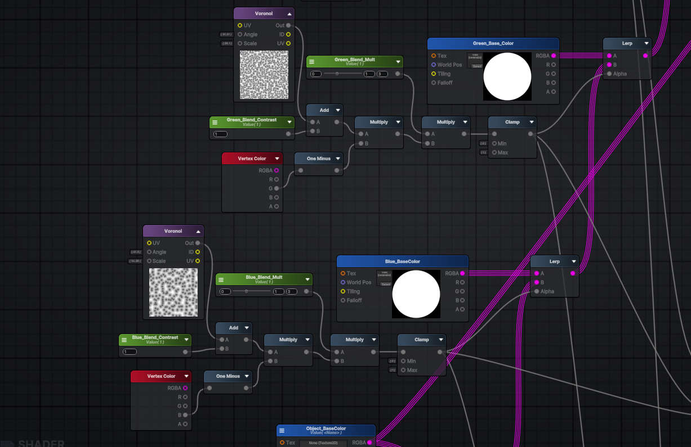

Visual Effects of 'Infernal Clean-up'
Technical Art, Minus the Technicalities
Demo
Render Texture
or
Vertex Painting
Problems:
// Paint-vert: result = Sphere Overlap Check on a raycast.
// This is within a coroutine.
foreach (var col in result)
{
if (!col)
continue;
col.TryGetComponent(out Cleanable cleanable);
if (cleanable)
{
Vector3 returnColor = Global.I.PaintVert(
col.GetComponent<MeshRenderer>(),
hit.point,
// Paint strength depending on number of objs being painted
paintStrengthNormal * result.Length,
paintRadius,
//
cleanable.KdTree);
}
// Paint 1 mesh per frame
yield return null;
}
Cleanable Shader-Graph
